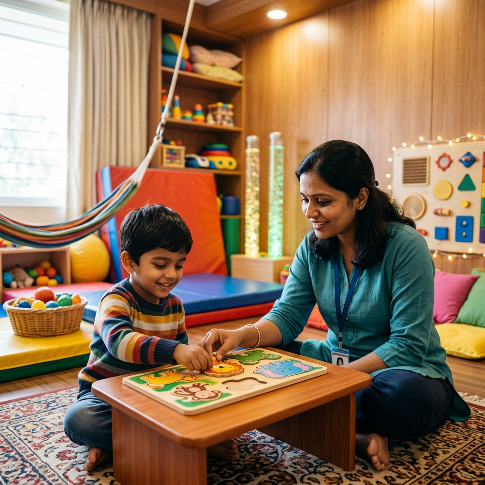

Receiving an autism diagnosis for your child can feel overwhelming. Bangalore parents face a flood of information — some helpful, some contradictory — about what therapy to pursue, where to go, and what results to expect. This guide cuts through the noise with a practical, evidence-based overview of autism therapy options available in Bangalore, what each approach actually does, and how to navigate the system without wasting time or money.
Understanding Autism Spectrum Disorder (ASD)
Autism is a neurodevelopmental condition that affects how a person communicates, interacts socially, and processes sensory information. It's called a "spectrum" because it ranges from mild differences that require minimal support to significant challenges that need intensive daily assistance.
Key points every Bangalore parent should know:
- Autism is not caused by parenting style, diet, or vaccines
- Prevalence in India is estimated at approximately 1 in 100 children (INCLEN Trust Study)
- Early identification and intervention dramatically improve long-term outcomes
- There is no single "cure" — but the right therapy can significantly improve quality of life
Types of Autism Therapy Available in Bangalore
1. Speech-Language Therapy
Communication is one of the core areas affected in autism. A speech-language pathologist (SLP) works on:
- Building expressive language — from first words to conversation
- Improving comprehension of instructions and questions
- Teaching social communication — eye contact, turn-taking, understanding body language
- Introducing AAC (Augmentative and Alternative Communication) for non-verbal or minimally verbal children
- Supporting gestalt language processors who learn language in chunks rather than single words
2. Occupational Therapy & Sensory Integration
Most children with autism experience sensory processing differences. An occupational therapist addresses:
- Hypersensitivity — distress from sounds, textures, lights, or crowds
- Hyposensitivity — seeking intense sensory input through spinning, crashing, or mouthing
- Fine motor skills for writing, dressing, and self-care
- Emotional regulation and transition management
- Creating a sensory diet — a structured daily plan of sensory activities
3. Applied Behaviour Analysis (ABA)
ABA uses structured, data-driven methods to teach new skills and reduce challenging behaviours. In its modern form:
- Sessions are play-based and child-led, not rigid table drills
- Skills are broken into small, teachable steps
- Focus areas include communication, social skills, self-care, and academic readiness
- Progress is measured objectively through data collection
4. Special Education
Special educators work on academic and cognitive skills adapted to the child's learning style. This includes pre-literacy, pre-numeracy, attention and memory training, and classroom readiness skills.
5. Parent Training and Counselling
Perhaps the most undervalued component. Effective autism therapy includes training parents to implement strategies at home. You spend far more hours with your child than any therapist — your involvement multiplies the impact of every session.
How to Choose an Autism Therapy Centre in Bangalore
Bangalore has hundreds of therapy centres, ranging from excellent to questionable. Here's what to look for:
| Green Flags ✅ | Red Flags ✗ |
|---|---|
| Therapists hold RCI registration and Masters degrees | Staff have no verifiable qualifications |
| Initial assessment before starting therapy | Therapy begins without any evaluation |
| Individualised goals with regular progress reviews | "One-size-fits-all" program for all children |
| Parent involvement and training included | Parents excluded from sessions entirely |
| Evidence-based methods with transparent explanations | Claims of "curing" autism or guaranteed results |
| Multidisciplinary team under one roof | Single-discipline approach for complex needs |
What to Expect in the First 3 Months
Setting realistic expectations is important. In the first 3 months of therapy, you may notice:
- Month 1: Assessment, goal setting, and the child building trust with the therapist. You may see small changes in attention and engagement
- Month 2: Emerging skills — the child may attempt new sounds, tolerate previously aversive textures, or follow simple instructions more consistently
- Month 3: Consolidation — early gains begin to generalise to home and other environments. Parents typically report "something has shifted"
Significant, sustained progress typically becomes visible between months 3 and 6. Autism therapy is a marathon, not a sprint — consistency and patience are essential.
Avoid: Centres that promise dramatic results in weeks, therapies with no scientific evidence (stem cell injections, chelation), or programs that create dependency rather than building independence.
Cost of Autism Therapy in Bangalore
Autism therapy typically requires multiple disciplines and higher frequency, so the monthly investment is greater than single-discipline therapy:
- Mild support needs: 2–3 sessions/week → ₹12,000–₹18,000/month
- Moderate support needs: 4–5 sessions/week → ₹24,000–₹35,000/month
- Intensive support needs: Daily sessions across disciplines → ₹40,000–₹60,000/month
While the investment is significant, the return — in terms of your child's independence, communication, and quality of life — is immeasurable.
Government Support and Resources
- ADIP Scheme: Government of India provides assistive devices and therapy aids for children with disabilities
- UDID Card: Unique Disability ID entitles families to transport concessions, tax benefits, and scheme eligibility
- NIMHANS Bangalore: Offers subsidised assessments and therapy, though waiting times can be lengthy
- RTE provisions: Children with autism have the right to inclusive education with necessary support
Autism Therapy at Rapture Therapy Centre
At Rapture Therapy Centre in Rajarajeshwari Nagar, we provide coordinated autism therapy with speech-language pathologists, occupational therapists, and special educators working as a unified team. Every child receives an individualised plan, regular progress reviews, and active parent coaching — because we know the best outcomes happen when families and therapists work together.
Starting Your Child's Autism Therapy Journey
Whether your child has a diagnosis or you're seeking an initial assessment, our interdisciplinary team is here to help. We offer comprehensive developmental evaluations and create tailored therapy programs for children across the autism spectrum.
Book an Assessment